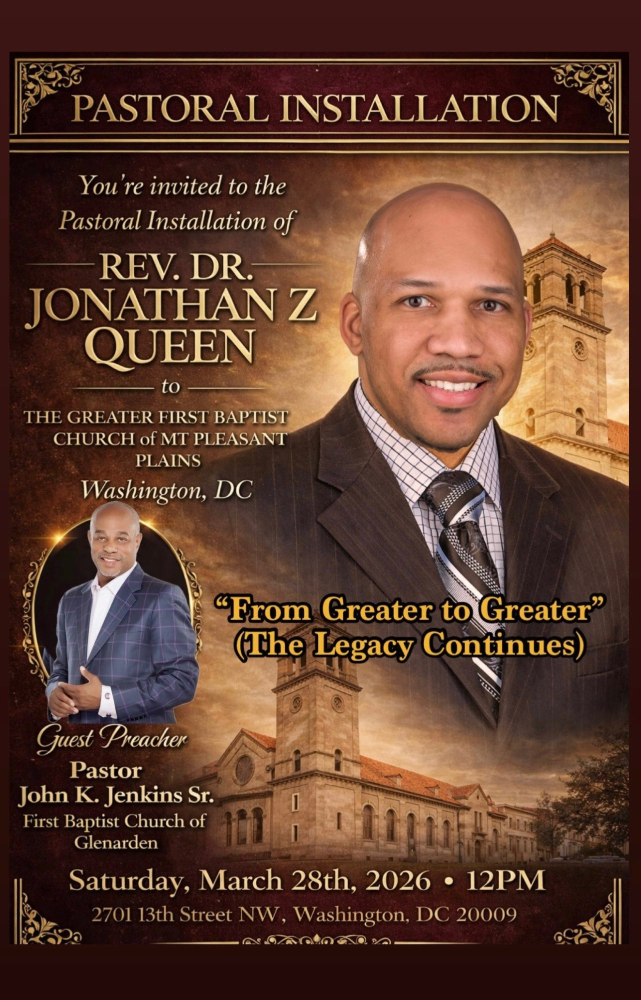
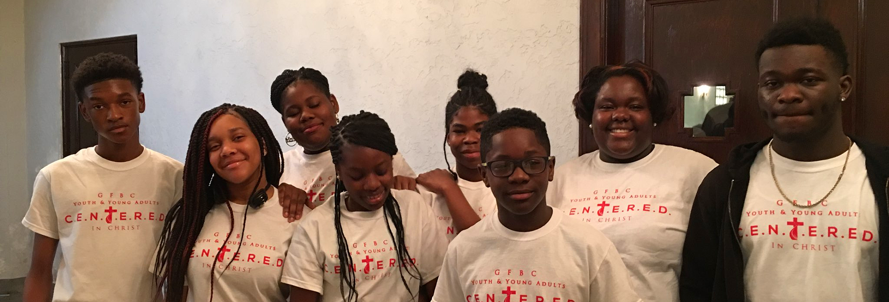

Loving God, Loving Others, Magnifying Jesus Christ
The mission of The Greater First Baptist Church is to love God, to love others, and to magnify the name of Jesus Christ.
The vision of our church is to glorify our God and Savior, Jesus Christ, to make true disciples throughout all the nations by means of missionary activity and support, to minister the ordinances, to edify believers, and to do all that is sovereignly possible and biblically permissible to magnify the name of Jesus.

The Greater First Baptist Church is blessed to be led by Rev. Dr. Jonathan Z. Queen, who serves as our Senior Pastor. Called to shepherd our congregation, Pastor Queen provides spiritual leadership, biblical teaching, and pastoral care to our church family.
As Pastor, Dr. Queen oversees the spiritual development of our members, leads worship services, provides counseling and guidance, and casts the vision for our church's mission to love God, love others, and magnify Jesus Christ. Under his leadership, our church continues to grow in faith, fellowship, and service to our community.
Learn More About Pastor QueenAt The Greater First Baptist Church, our Children, Youth, and Young Adult Ministries are sacred spaces where faith is formed, questions are welcomed, and purpose begins to take shape.
We nurture growing hearts and minds through Christ-centered teaching, authentic relationships, and joyful worship—helping each generation discover who they are, whose they are, and how God can use them to make a difference. From first steps to bold leaps of faith, we’re growing together—one prayer, one lesson, one life at a time.
Learn About Our Ministries
We are always striving to make a difference, and invite you to learn more and lend your support.
Giving has a deeper impact on our community than the gift itself.
Give Nowinfo@thegfbcdc.org
The Greater First Baptist Church
2701 13th Street, N.W.
Washington, D.C. 20009